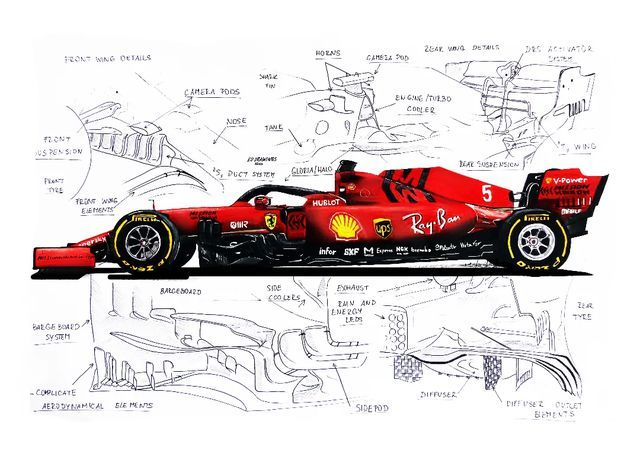

Formula 1
- Formula One (F1) is the highest class of worldwide racing for open-wheel, single-seater formula racing cars run by the Formula One Group and sanctioned by the Fédération Internationale de l'Automobile (FIA). The FIA Formula One World Championship has been one of the world's premier forms of motorsport since its inaugural running in 1950 and is often considered to be the pinnacle of motorsport. The word formula in the name refers to the set of rules all participant cars must follow. A Formula One season consists of a series of races, known as Grands Prix. Grands Prix take place in multiple countries and continents on either purpose-built circuits or closed roads, as street circuits.
- A points scoring system is used at Grands Prix to determine two annual World Championships: one for the drivers, and one for the constructors—now synonymous with teams. Each driver must hold a valid Super Licence, the highest class of racing licence the FIA issues, and the races must be held on Grade One tracks, the highest grade rating the FIA issues for circuits.
- Formula One cars are the world's fastest regulated road-course racing cars, owing to high cornering speeds achieved by generating large amounts of aerodynamic downforce, most of which is generated by front and rear wings, as well as underbody tunnels. The cars depend on electronics, aerodynamics, suspension, and tyres. Traction control, launch control, automatic shifting, and other electronic driving aids were first banned in 1994. They were briefly reintroduced in 2001 but were banned once more in 2004 and later 2008.

| Driver |
Points |
Position |
| Kimi Antonelli |
340 |
1 |
| George Russel |
238 |
2 |
| Lewis Hamilton |
229 |
3 |
| Max Verstappen |
221 |
4 |
| Charles Leclerc |
215 |
5 |
Testing a link here.